Web Server Statistics for rigoresendez.com
Web Server Statistics for rigoresendez.com
Program started on Mon, Feb 29 2016 at 7:36 AM.
Analyzed requests from Thu, Feb 18 2016 at 4:11 PM to Mon, Feb 29 2016 at 3:18 AM (10.46 days).
Web Server Statistics for rigoresendez.comProgram started on Mon, Feb 29 2016 at 7:36 AM.
Analyzed requests from Thu, Feb 18 2016 at 4:11 PM to Mon, Feb 29 2016 at 3:18 AM (10.46 days).
(Go To: Top | General Summary | Monthly Report | Daily Summary | Hourly Summary | Domain Report | Organization Report | Redirected Referrer Report | Failed Referrer Report | Referring Site Report | Browser Report | Browser Summary | Operating System Report | Status Code Report | File Size Report | File Type Report | Directory Report | Request Report)
Figures in parentheses refer to the 7-day period ending Feb 29 2016 at 7:36 AM.
Successful requests: 270 (175)
Average successful requests per day: 25 (24)
Successful requests for pages: 130 (87)
Average successful requests for pages per day: 12 (12)
Failed requests: 68 (4)
Redirected requests: 1 (0)
Distinct files requested: 35 (11)
Distinct hosts served: 81 (9)
Data transferred: 17.18 megabytes (6.04 megabytes)
Average data transferred per day: 1.64 megabytes (883.47 kilobytes)
(Go To: Top | General Summary | Monthly Report | Daily Summary | Hourly Summary | Domain Report | Organization Report | Redirected Referrer Report | Failed Referrer Report | Referring Site Report | Browser Report | Browser Summary | Operating System Report | Status Code Report | File Size Report | File Type Report | Directory Report | Request Report)
Each unit ( ) represents 4 requests for pages or part thereof.
) represents 4 requests for pages or part thereof.
| month | #reqs | #pages | |
|---|---|---|---|
| Feb 2016 | 270 | 130 |  |
Busiest month: Feb 2016 (130 requests for pages).
(Go To: Top | General Summary | Monthly Report | Daily Summary | Hourly Summary | Domain Report | Organization Report | Redirected Referrer Report | Failed Referrer Report | Referring Site Report | Browser Report | Browser Summary | Operating System Report | Status Code Report | File Size Report | File Type Report | Directory Report | Request Report)
Each unit () represents 1 request for a page.
| day | #reqs | #pages | |
|---|---|---|---|
| Sun | 35 | 16 |  |
| Mon | 22 | 13 |   |
| Tue | 19 | 10 |  |
| Wed | 60 | 22 | |
| Thu | 47 | 15 | |
| Fri | 54 | 35 | |
| Sat | 33 | 19 | |
(Go To: Top | General Summary | Monthly Report | Daily Summary | Hourly Summary | Domain Report | Organization Report | Redirected Referrer Report | Failed Referrer Report | Referring Site Report | Browser Report | Browser Summary | Operating System Report | Status Code Report | File Size Report | File Type Report | Directory Report | Request Report)
Each unit () represents 1 request for a page.
| hour | #reqs | #pages | |
|---|---|---|---|
| 0 | 12 | 5 | |
| 1 | 6 | 3 | |
| 2 | 16 | 13 | |
| 3 | 13 | 8 | |
| 4 | 9 | 7 | |
| 5 | 9 | 5 | |
| 6 | 14 | 9 | |
| 7 | 8 | 6 | |
| 8 | 6 | 3 | |
| 9 | 12 | 7 | |
| 10 | 2 | 1 | |
| 11 | 8 | 4 | |
| 12 | 5 | 4 | |
| 13 | 8 | 5 | |
| 14 | 10 | 7 | |
| 15 | 12 | 6 | |
| 16 | 53 | 4 | |
| 17 | 9 | 6 | |
| 18 | 7 | 5 | |
| 19 | 5 | 4 | |
| 20 | 14 | 7 | |
| 21 | 1 | 0 | |
| 22 | 17 | 4 | |
| 23 | 14 | 7 | |
(Go To: Top | General Summary | Monthly Report | Daily Summary | Hourly Summary | Domain Report | Organization Report | Redirected Referrer Report | Failed Referrer Report | Referring Site Report | Browser Report | Browser Summary | Operating System Report | Status Code Report | File Size Report | File Type Report | Directory Report | Request Report)
Listing domains, sorted by the amount of traffic.
| #reqs | %bytes | domain |
|---|---|---|
| 270 | 100% | [unresolved numerical addresses] |
(Go To: Top | General Summary | Monthly Report | Daily Summary | Hourly Summary | Domain Report | Organization Report | Redirected Referrer Report | Failed Referrer Report | Referring Site Report | Browser Report | Browser Summary | Operating System Report | Status Code Report | File Size Report | File Type Report | Directory Report | Request Report)
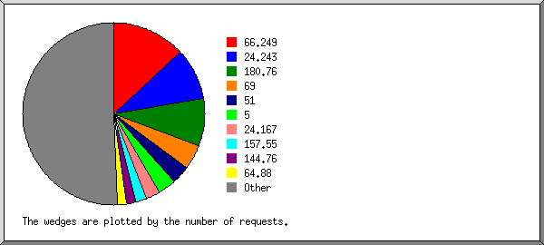
Listing the top 20 organizations by the number of requests, sorted by the number of requests.
| #reqs | %bytes | organization |
|---|---|---|
| 107 | 34.62% | 66.249 |
| 43 | 61.84% | 24.167 |
| 24 | 0.42% | 180.76 |
| 10 | 0.23% | 64.79 |
| 10 | 0.23% | 144.76 |
| 8 | 0.18% | 51 |
| 8 | 0.18% | 63.141 |
| 7 | 0.13% | 201.171 |
| 5 | 0.11% | 104 |
| 4 | 0.10% | 198.186 |
| 4 | 0.11% | 207.46 |
| 3 | 0.06% | 157.55 |
| 3 | 0.08% | 158.69 |
| 3 | 0.06% | 188.165 |
| 3 | 0.06% | 176.36 |
| 2 | 0.05% | 136.243 |
| 2 | 0.03% | 80.248 |
| 2 | 0.05% | 68.180 |
| 1 | 0.03% | 159.203 |
| 1 | 0.01% | 70 |
| 20 | 1.42% | [not listed: 20 organizations] |
(Go To: Top | General Summary | Monthly Report | Daily Summary | Hourly Summary | Domain Report | Organization Report | Redirected Referrer Report | Failed Referrer Report | Referring Site Report | Browser Report | Browser Summary | Operating System Report | Status Code Report | File Size Report | File Type Report | Directory Report | Request Report)
Listing referring URLs, sorted by the number of redirected requests.
| #reqs | URL |
|---|---|
| 1 | http://rigoresendez.com/sms.php |
(Go To: Top | General Summary | Monthly Report | Daily Summary | Hourly Summary | Domain Report | Organization Report | Redirected Referrer Report | Failed Referrer Report | Referring Site Report | Browser Report | Browser Summary | Operating System Report | Status Code Report | File Size Report | File Type Report | Directory Report | Request Report)
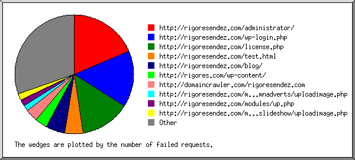
Listing referring URLs, sorted by the number of failed requests.
| #reqs | URL |
|---|---|
| 2 | http://domaincrawler.com/rigoresendez.com |
| 1 | http://www.rigoresendez.com/robots.txt |
(Go To: Top | General Summary | Monthly Report | Daily Summary | Hourly Summary | Domain Report | Organization Report | Redirected Referrer Report | Failed Referrer Report | Referring Site Report | Browser Report | Browser Summary | Operating System Report | Status Code Report | File Size Report | File Type Report | Directory Report | Request Report)
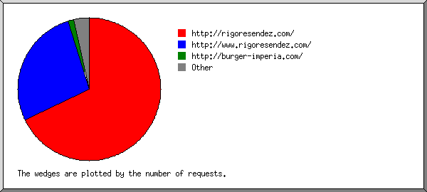
Listing referring sites, sorted by the number of requests.
| #reqs | site |
|---|---|
| 46 | http://rigoresendez.com/ |
| 21 | http://www.rigoresendez.com/ |
| 4 | http://burger-imperia.com/ |
| 2 | http://domaincrawler.com/ |
| 1 | http://hvd-store.com/ |
| 1 | http://hundejo.com/ |
| 1 | https://www.google.com.mx/ |
| 1 | http://whois.domaintools.com/ |
(Go To: Top | General Summary | Monthly Report | Daily Summary | Hourly Summary | Domain Report | Organization Report | Redirected Referrer Report | Failed Referrer Report | Referring Site Report | Browser Report | Browser Summary | Operating System Report | Status Code Report | File Size Report | File Type Report | Directory Report | Request Report)
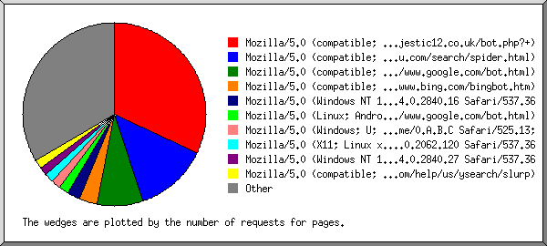
Listing browsers with at least 1 request for a page, sorted by the number of requests for pages.
| #reqs | #pages | browser |
|---|---|---|
| 101 | 51 | Mozilla/5.0 (compatible; Googlebot/2.1; +http://www.google.com/bot.html) |
| 29 | 17 | Mozilla/5.0 (compatible; MJ12bot/v1.4.5; http://www.majestic12.co.uk/bot.php?+) |
| 24 | 17 | Mozilla/5.0 (compatible; Baiduspider/2.0; +http://www.baidu.com/search/spider.html) |
| 6 | 6 | Mozilla/5.0 (X11; Linux x86_64) AppleWebKit/537.36 (KHTML, like Gecko) Chrome/37.0.2062.120 Safari/537.36 |
| 10 | 6 | Mozilla/5.0 (compatible; BLEXBot/1.0; +http://webmeup-crawler.com/) |
| 8 | 3 | Mozilla/5.0 (compatible; bingbot/2.0; +http://www.bing.com/bingbot.htm) |
| 5 | 3 | Mozilla/5.0 (compatible; spbot/5.0; +http://OpenLinkProfiler.org/bot ) |
| 5 | 3 | Mozilla/5.0 (Windows NT 6.1; WOW64) AppleWebKit/537.36 (KHTML, like Gecko) Chrome/39.0.2171.95 Safari/537.36 |
| 5 | 3 | Mozilla |
| 3 | 2 | Mozilla/5.0 (iPhone; CPU iPhone OS 8_3 like Mac OS X) AppleWebKit/600.1.4 (KHTML, like Gecko) Version/8.0 Mobile/12F70 Safari/600.1.4 (compatible; Googlebot/2.1; +http://www.google.com/bot.html) |
| 42 | 2 | Mozilla/5.0 (Windows NT 10.0; Win64; x64) AppleWebKit/537.36 (KHTML, like Gecko) Chrome/49.0.2623.54 Safari/537.36 |
| 2 | 2 | Mozilla/5.0 (compatible; Yahoo! Slurp; http://help.yahoo.com/help/us/ysearch/slurp) |
| 1 | 1 | Mozilla/5.0 (compatible; DotBot/1.1; http://www.opensiteexplorer.org/dotbot, help@moz.com) |
| 1 | 1 | Mozilla/5.0 (Macintosh; Intel Mac OS X 10.10; rv:43.0) Gecko/20100101 Firefox/43.0 |
| 1 | 1 | Mozilla/5.0 (Windows NT 6.2; Win64; x64) AppleWebKit/537.36 (KHTML, like Gecko) Chrome/32.0.1667.0 Safari/537.36 |
| 2 | 1 | DomainCrawler/1.0 |
| 1 | 1 | Mozilla/5.0 Firefox/35.0 |
| 1 | 1 | Mozilla/5.0 (Windows NT 6.3; WOW64; rv:28.0) Gecko/20100101 Firefox/28.0 |
| 1 | 1 | Mozilla/5.0 (Macintosh; Intel Mac OS X 10.6; rv:25.0) Gecko/20100101 Firefox/25.0 |
| 1 | 1 | Mozilla/5.0 (Windows NT 6.2; WOW64; Trident/7.0; rv:11.0) like Gecko |
| 1 | 1 | Mozilla/5.0 (Macintosh; Intel Mac OS X 10_6_8) AppleWebKit/535.2 (KHTML, like Gecko) Chrome/15.0.861.0 Safari/535.2 |
| 1 | 1 | Mozilla/5.0 (Windows; U; Windows NT 6.0; fr; rv:1.9.0.1) Gecko/2008070208 Firefox/21.0 |
| 14 | 0 | [not listed: 6 browsers] |
(Go To: Top | General Summary | Monthly Report | Daily Summary | Hourly Summary | Domain Report | Organization Report | Redirected Referrer Report | Failed Referrer Report | Referring Site Report | Browser Report | Browser Summary | Operating System Report | Status Code Report | File Size Report | File Type Report | Directory Report | Request Report)
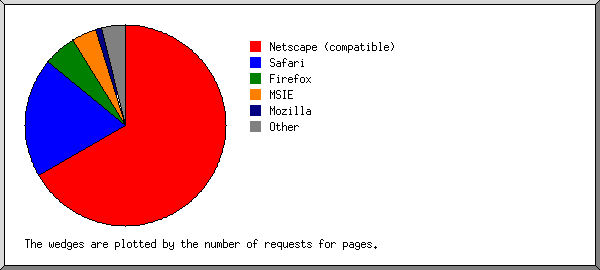
Listing browsers with at least 1 request for a page, sorted by the number of requests for pages.
| # | #reqs | #pages | browser |
|---|---|---|---|
| 1 | 181 | 100 | Netscape (compatible) |
| 2 | 67 | 15 | Safari |
| 63 | 12 | Safari/537 | |
| 3 | 2 | Safari/600 | |
| 1 | 1 | Safari/535 | |
| 3 | 6 | 5 | Firefox |
| 1 | 1 | Firefox/35 | |
| 1 | 1 | Firefox/28 | |
| 1 | 1 | Firefox/21 | |
| 1 | 1 | Firefox/43 | |
| 1 | 1 | Firefox/25 | |
| 4 | 5 | 3 | Netscape |
| 5 | 1 | 1 | Mozilla |
| 6 | 2 | 1 | DomainCrawler |
| 2 | 1 | DomainCrawler/1 | |
| 3 | 0 | [not listed: 1 browser] |
(Go To: Top | General Summary | Monthly Report | Daily Summary | Hourly Summary | Domain Report | Organization Report | Redirected Referrer Report | Failed Referrer Report | Referring Site Report | Browser Report | Browser Summary | Operating System Report | Status Code Report | File Size Report | File Type Report | Directory Report | Request Report)
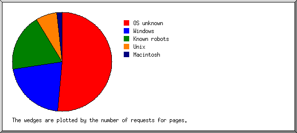
Listing operating systems, sorted by the number of requests for pages.
| # | #reqs | #pages | OS |
|---|---|---|---|
| 1 | 150 | 79 | OS unknown |
| 2 | 42 | 26 | Known robots |
| 3 | 59 | 9 | Windows |
| 9 | 7 | Unknown Windows | |
| 42 | 2 | Windows NT | |
| 8 | 0 | Windows XP | |
| 4 | 8 | 6 | Unix |
| 8 | 6 | Linux | |
| 5 | 6 | 5 | Macintosh |
(Go To: Top | General Summary | Monthly Report | Daily Summary | Hourly Summary | Domain Report | Organization Report | Redirected Referrer Report | Failed Referrer Report | Referring Site Report | Browser Report | Browser Summary | Operating System Report | Status Code Report | File Size Report | File Type Report | Directory Report | Request Report)
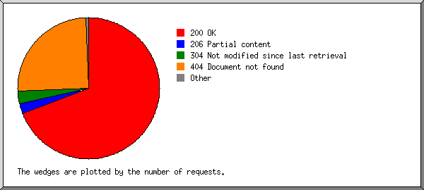
Listing status codes, sorted numerically.
| #reqs | status code |
|---|---|
| 257 | 200 OK |
| 1 | 302 Document found elsewhere |
| 13 | 304 Not modified since last retrieval |
| 68 | 404 Document not found |
(Go To: Top | General Summary | Monthly Report | Daily Summary | Hourly Summary | Domain Report | Organization Report | Redirected Referrer Report | Failed Referrer Report | Referring Site Report | Browser Report | Browser Summary | Operating System Report | Status Code Report | File Size Report | File Type Report | Directory Report | Request Report)
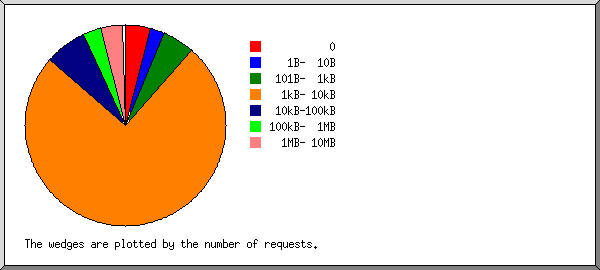
| size | #reqs | %bytes |
|---|---|---|
| 0 | 13 | |
| 1B- 10B | 0 | |
| 11B- 100B | 0 | |
| 101B- 1kB | 9 | 0.03% |
| 1kB- 10kB | 219 | 5.37% |
| 10kB-100kB | 15 | 7.01% |
| 100kB- 1MB | 8 | 9.38% |
| 1MB- 10MB | 6 | 78.21% |
(Go To: Top | General Summary | Monthly Report | Daily Summary | Hourly Summary | Domain Report | Organization Report | Redirected Referrer Report | Failed Referrer Report | Referring Site Report | Browser Report | Browser Summary | Operating System Report | Status Code Report | File Size Report | File Type Report | Directory Report | Request Report)
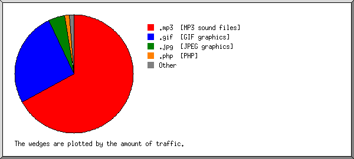
Listing extensions with at least 0.1% of the traffic, sorted by the amount of traffic.
| #reqs | %bytes | extension |
|---|---|---|
| 7 | 81.86% | .gif [GIF graphics] |
| 22 | 12.74% | .jpg [JPEG graphics] |
| 108 | 2.41% | [directories] |
| 70 | 1.76% | .php [PHP] |
| 29 | 0.87% | .css [Cascading Style Sheets] |
| 22 | 0.23% | .html [Hypertext Markup Language] |
| 12 | 0.13% | [not listed: 3 extensions] |
(Go To: Top | General Summary | Monthly Report | Daily Summary | Hourly Summary | Domain Report | Organization Report | Redirected Referrer Report | Failed Referrer Report | Referring Site Report | Browser Report | Browser Summary | Operating System Report | Status Code Report | File Size Report | File Type Report | Directory Report | Request Report)
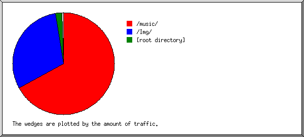
Listing directories with at least 0.01% of the traffic, sorted by the amount of traffic.
| #reqs | %bytes | directory |
|---|---|---|
| 36 | 94.62% | /Img/ |
| 201 | 4.42% | [root directory] |
| 31 | 0.87% | /css/ |
| 2 | 0.08% | /cgi-sys/ |
(Go To: Top | General Summary | Monthly Report | Daily Summary | Hourly Summary | Domain Report | Organization Report | Redirected Referrer Report | Failed Referrer Report | Referring Site Report | Browser Report | Browser Summary | Operating System Report | Status Code Report | File Size Report | File Type Report | Directory Report | Request Report)
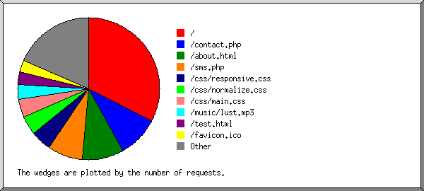
Listing files with at least 20 requests, sorted by the number of requests.
| #reqs | %bytes | last time | file |
|---|---|---|---|
| 106 | 2.41% | Feb/29/16 3:18 AM | / |
| 45 | 1.16% | Feb/28/16 11:25 PM | /sms.php |
| 24 | 0.60% | Feb/28/16 11:26 PM | /contact.php |
| 22 | 0.23% | Feb/29/16 2:38 AM | /about.html |
| 73 | 95.60% | Feb/28/16 11:26 PM | [not listed: 23 files] |